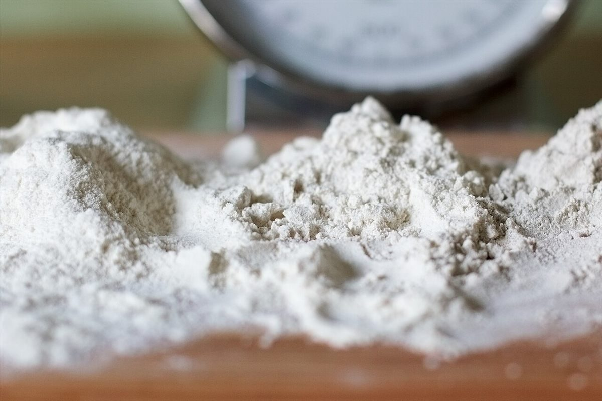
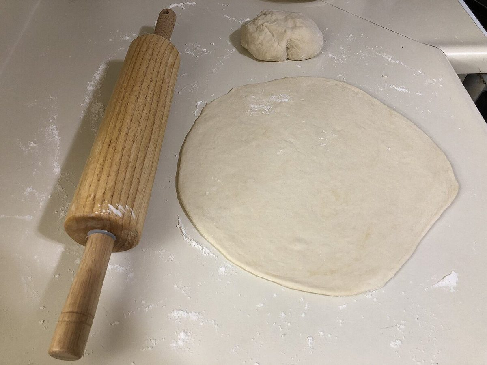
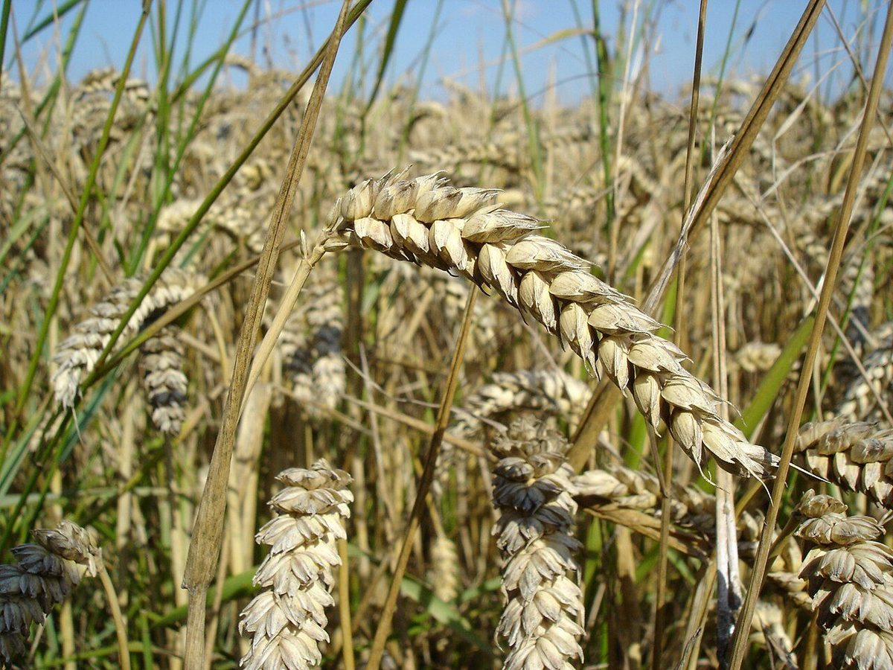

このページの写真はフリー素材のイメージで、店舗の実際の商品・店内・外観ではありません。日本国内外(他地域を含む)で撮影されたものや、撮影地が不明なものが含まれます。
ABOUTお店について
お店のこだわり・店主のご紹介などは準備中です(お問い合わせください)。
コンセプト「朝の紙袋」
このサイトは、お店の公式な方針ではなく、制作側が考えたコンセプト案でつくっています。
一 袋の口をあける
ページの枠や影は、パンを包む紙袋とその口の折り目をイメージしています。
二 ラベルのひとこと
見出しは、袋に押すラベルのように短く。読みやすさを大切にしました。
三 やわらかい色
墨色の文字に、青磁のような淡い緑と、焼き色を思わせる赤茶をひとさし。落ち着いて読める配色を考えました。

お店の情報
- 店名坂下津製パン所
- 所在地愛媛県宇和島市坂下津甲407-209
- こだわり準備中(お問い合わせください)
- スタッフ準備中(お問い合わせください)
店名の意味や、地名の由来について、このサイトでは触れていません。お店からお話をうかがえたら、正しい内容を掲載します。


